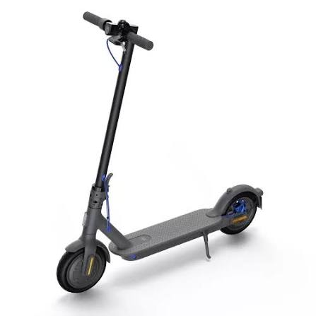
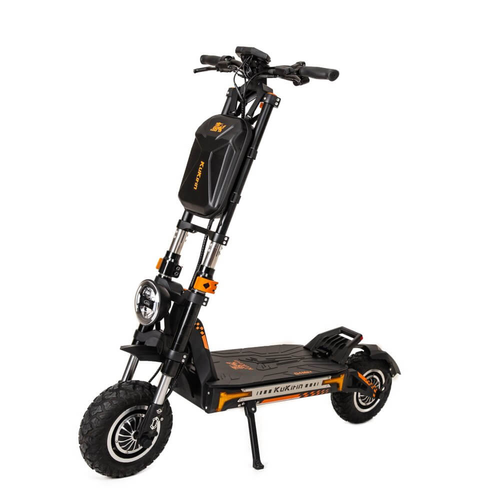

Elektromos rollerek



Elektromos rollerek
Az elektromos roller az elmúlt években egyre népszerűbb közlekedési eszközzé vált. Főleg városokban használják, ahol gyors és kényelmes megoldást jelent a rövidebb utak megtételére. Akkumulátorról működik, így nincs szükség üzemanyagra. Sok modell összecsukható, ezért könnyen szállítható és tárolható.
Hogyan működik egy elektromos roller?
Az elektromos rollert egy akkumulátor és egy elektromotor működteti. Az akkumulátor energiát biztosít a motornak, amely mozgásba hozza a rollert. A sebességet a kormányon található kezelőszervekkel lehet szabályozni. A legtöbb modern modellen kijelző is található, amely mutatja a sebességet és az akkumulátor töltöttségét.
Előnyök és biztonság
Az elektromos rollert egy akkumulátor és egy elektromotor működteti. Az akkumulátor energiát biztosít a motornak, amely mozgásba hozza a rollert. A sebességet a kormányon található kezelőszervekkel lehet szabályozni. A legtöbb modern modellen kijelző is található, amely mutatja a sebességet és az akkumulátor töltöttségét.
Népszerű elektromos rollerek
A piacon számos ismert elektromosroller-gyártó található, például a Xiaomi, a Joyor és a KuKirin. Modelljeik teljesítményben, hatótávban, végsebességben és méretben is különböznek. Vannak kisebb városi rollerek és nagyobb teljesítményű modellek is, így mindenki megtalálhatja a számára megfelelőt.
Vásárlás előtti szempontok
Elektromos roller vásárlásakor több dolgot is érdemes figyelembe venni. Az egyik legfontosabb a hatótáv, hiszen nem mindegy, hogy milyen távolságot szeretnénk megtenni egyetlen feltöltéssel. A motor teljesítménye, a fékrendszer, a kerékméret és a rugózás szintén fontos szempontok. Nem érdemes kizárólag a végsebesség alapján választani, hiszen a megbízhatóság és a biztonság legalább ilyen fontos. Érdemes olyan modellt keresni, amely megfelel a mindennapi használati igényeinknek.
Új elektromos roller szabályok
2027-től január 1-jétől jelentős változások jöhetnek az elektromos rollerek közlekedési szabályaiban Magyarországon. Az új szabályozás célja a biztonságosabb közlekedés megteremtése és a balesetek számának csökkentése. A tervek szerint a rollereket teljesítményük és végsebességük alapján két kategóriába sorolnák. A nagyobb teljesítményű, 25 km/h-nál gyorsabb modellek vezetéséhez legalább AM kategóriás jogosítványra és 16 éves alsó korhatárra lenne szükség, valamint kötelező lenne a bukósisak használata. A kisebb teljesítményű rollereknél 14 év lenne az alsó korhatár, jogosítvány nélkül, de a 18 év alattiaknak fejvédőt kellene viselniük. A tervezet emellett sebességkorlátozásokat, alkoholtilalmat és az utasszállítás korlátozását is tartalmazza. Ezek a változások minden elektromos rollert használó számára fontosak lehetnek, ezért érdemes figyelemmel követni a végleges szabályok megjelenését.
| Márka | Xiaomi | Joyor | KuKirin |
|---|---|---|---|
| típus | Xiaomi 4 Lite 2 Gen | Joyor T10 | KuKirin G4 Max |
| Ár | 88.000 Ft-tól | 200.000 Ft-tól | 750.000 Ft-tól |
| Teljesítmény | 300 W | 2000 W | 3200 W |
| Hatótáv | 25 km | 75 km | 100 km |
| Végsebesség | 25 km/h | 60 km/h | 86 km/h |
| Tömeg | 16,2 kg | 29,6 kg | 64 kg |